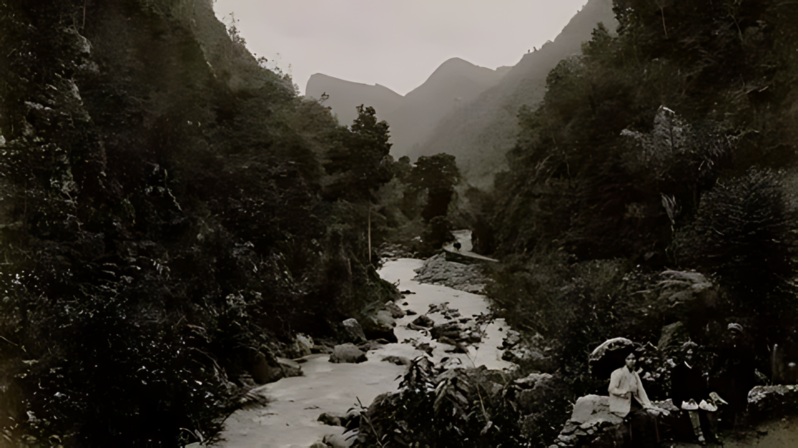

Sejarah lingkungan di Indonesia, khususnya Provinsi Sumatera Barat tidak lepas dari adanya berbagai bencana alam yang terjadi. Salah satu daerah yang terkena dampak bencana alam, yaitu jalan Lembah Anai. Jalan ini merupakan sebuah wilayah strategis yang menghubungkan Kota Padang dengan daerah pedalaman Sumatera Barat. Pada masa kolonial, banjir menjadi salah satu bencana yang kerap melanda kawasan ini, serta membawa dampak signifikan bagi masyarakat dan pemerintah kolonial Belanda.
Jalan Lembah Anai merupakan bagian penting dari infrastruktur kolonial yang dibangun oleh Belanda untuk menghubungkan pusat-pusat administrasi dan ekonomi. Jalan ini melintasi lembah yang dikelilingi oleh pegunungan, membuatnya rawan terhadap aliran air deras yang melanda. Konstruksi jalan di lembah ini dimulai pada akhir abad ke-19 dan selesai pada awal abad ke-20, merupakah sebuah proyek yang membutuhkan tenaga kerja besar dan teknologi yang relatif canggih pada masanya (De Nieuwe Vorstenlanden, 1904).
Banjir yang sering melanda jalan Lembah Anai pada masa kolonial dipicu oleh beberapa faktor, pertama, curah hujan yang tinggi di daerah pegunungan menciptakan aliran air yang kuat menuju lembah. Kedua, praktik penebangan hutan untuk keperluan perkebunan dan pembangunan infrastruktur menyebabkan berkurangnya daerah resapan air. Akibatnya, air hujan tidak dapat diserap dengan baik oleh tanah dan langsung mengalir ke sungai-sungai kecil yang kemudian meluap. Ketiga, teknologi drainase dan infrastruktur pengendalian banjir pada masa itu belum memadai. Kanal dan sistem drainase yang dibangun sering kali tidak mampu menampung volume air yang besar, terutama saat hujan deras berkepanjangan. Konstruksi jalan yang memotong kontur alami tanah juga berkontribusi pada perubahan aliran air, yang akhirnya pada perubahan aliran air, yang akhirnya memperparah dampak banjir (Deli Courant, 1904).
Pada masa kolonial, tercatat setidaknya ada dua kali banjir besar dan tanah longsor yang terjadi di kawasan Lembah Anai, yaitu pada 1892 dan 1904. Pada tahun ini, banjir mengakibatkan terputusnya jalur kereta api dan rusaknya sebagian besar jalan pengangkutan (Bataviaasch Nieuwsblad, 1904). Banjir di jalan Lembah Anai ini memiliki dampak yang luas, tidak hanya merusak infrastruktur tetapi juga menganggu kehidupan masyarakat setempat dan aktivitas ekonomi. Pada masa kolonial, jalan ini merupakan urat nadi transportasi yang menghubungkan pelabuhan di Padang dengan daerah pedalaman yang kaya akan hasil bumi seperti kopi, karet, dan hasil hutan lainnya. Ketika banjir melanda, arus transportasi terganggu, menyebabkan penundaan pengiriman barang dan kerugian ekonomi yang signifikan (Het Vaderland, 1904).
Selain itu, banjir juga menghancurkan lahan pertanian dan permukiman di sekitar lembah. Masyarakat yang tinggal di daerah ini sering kali harus mengungsi ke tempat yang lebih aman, meninggalkan rumah, dan harta benda mereka. Kehidupan sehari-hari menjadi terganggu, dan pemulihan pasca-banjir sering memakan waktu yang lama dan membutuhkan biaya yang besar. Menghadapi tantangan tersebut, pemerintah kolonial Belanda mengambil beberapa langkah untuk mengurangi dampak banjir di jalan Lembah Anai. Salah satunya merupakan dengan memperbaiki dan memperkuat infrastruktur jalan dan jembatan. Proyek ini melibatkan peningkatan kualitas material konstruksi dan desain yang lebih tahan terhadap aliran air deras (Sumatra Bode, 1903).
Pemerintah kolonial juga mencoba mengelola aliran air dengan membangun kanal dan sistem drainase yang lebih baik, namun, karena keterbatasan teknologi dan pengetahuan pada masa itu, Upaya ini sering kali tidak sepenuhnya efektif. Selain itu, kebijakan pengelolaan hutan dan tanah mulai diperkenalkan untuk mencegah deforestasi yang berlebihan dan menjaga keseimbangan ekosistem (Irdam Idris, 1969: 4-6).
 Kilas Balik Banjir Bandang di Lembah Anai Tahun 1892Sejarah banjir di jalan Lembah Anai pada masa kolonial memberikan beberapa pelajaran berharga bagi pengelolaan lingkungan dan infrastruktur saat ini. Pertama, pentingnya menjaga keseimbangan ekosistem melalui praktik-praktik pengelolaan hutan yang berkelanjutan. Deforestasi yang tidak terkendali dapat mengakibatkan bencana alam yang merugikan banyak pihak.
Kedua, perencanaan dan pembangunan infrastruktur harus mempertimbangkan kondisi alam dan potensi bencana. Teknologi dan desain modern harus diterapkan untuk memastikan bahwa jalan, jembatan, dan sistem drainase dapat menahan aliran air yang besar dan mencegah kerusakan yang lebih parah. Ketiga, pentingnya kolaborasi antara pemerintah, masyarakat, dan ahli lingkungan dalam menangani bencana alam. Partisipasi aktif dari semua pihak dapat meningkatkan efektivitas penanganan dan pemulihan pasca-bencana (Nawiyanto, 2018: 129-160).
Banjir di jalan Lembah Anai Sumatera Barat pada masa kolonial merupakan bagian dari sejarah panjang bencana alam di Indonesia. Meskipun teknologi dan pengetahuan pada masa itu terbatas, upaya-upaya yang dilakukan oleh pemerintah kolonial memberikan dasar bagi pengelolaan bencana alam di masa depan. Dengan belajar dari pengalaman masa lalu, kita dapat mengembangkan strategi yang lebih baik untuk menghadapi tantangan lingkungan dan memastikan kesejahteraan masyarakat di daerah rawan bencana.
Sumber
Koran
Bataviaasch Nieuwsblad, 1904
Deli Courant, 1904
De Nieuwe Vorstenlanden, 1904
Het Vaderland, 1904
Sumatra Bode, 1903
Jurnal
Nawiyanto. 2015. “Forest Resources Exploitation and its Impact in the Extreme Salient of Java, 1870-1970”. Tawarikh, Vol. 6, No. 2, April 2015, hlm. 149- 168
Buku
Irdam Idris. 1969. Sejarah Perkembangan Pekerjaan Umum di Indonesia, Jakarta: Dinas Pekerjaan Umum.